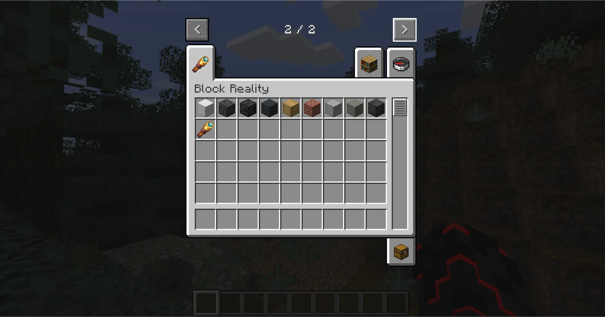
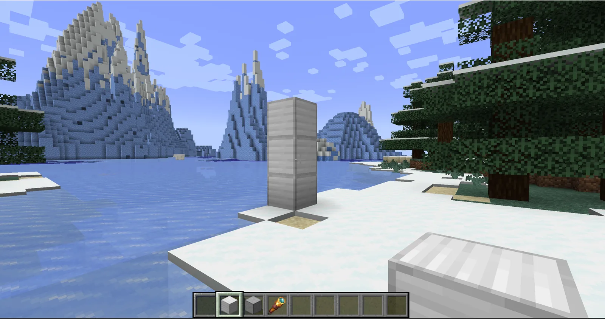
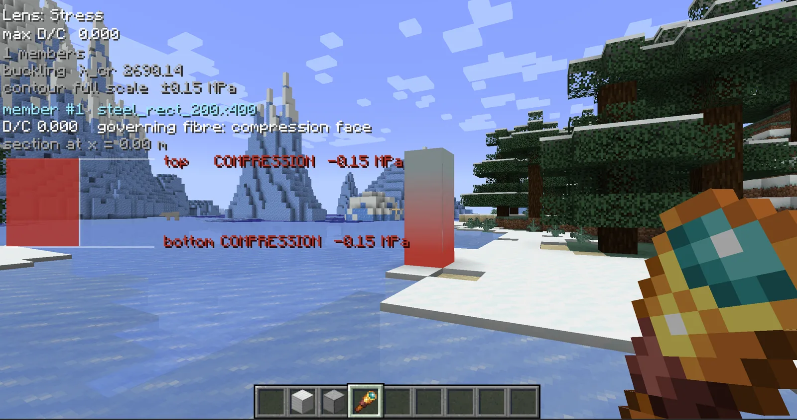
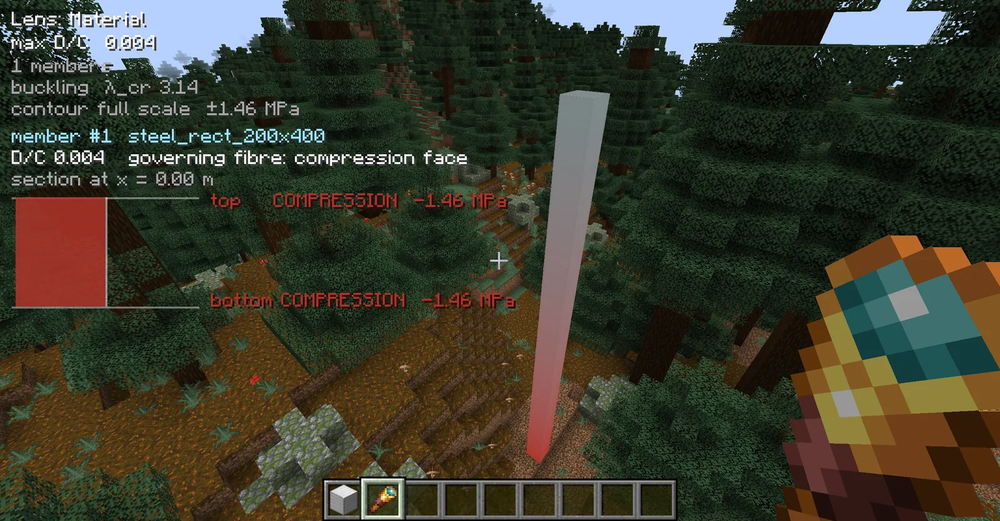
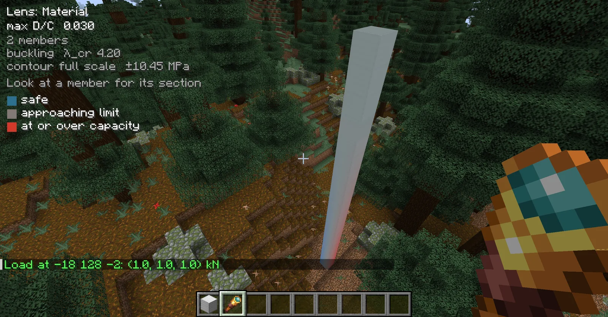
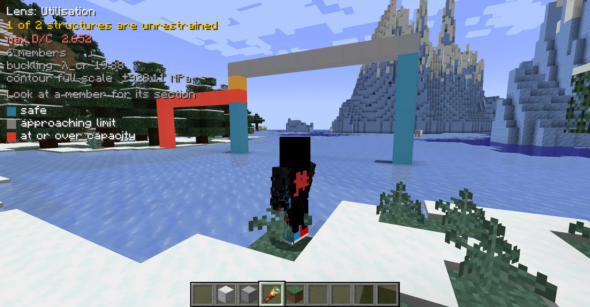

The creative tab
Everything is in one creative tab, Block Reality: nine structural blocks and the Stress Glasses.

| Item | Section token | What it is |
|---|---|---|
| Structural Steel | steel_rect_200x400 |
6-DOF beam, 200 × 400 mm |
| Structural Steel 150x300 | steel_rect_150x300 |
6-DOF beam, 150 × 300 mm |
| Structural Steel 100x200 | steel_rect_100x200 |
6-DOF beam, 100 × 200 mm |
| Plain Concrete Beam | concrete_rect_400x600 |
6-DOF beam, 400 × 600 mm, unreinforced — cracks in tension at 3 MPa, as it should |
| Timber Beam | timber_rect_140x240 |
6-DOF beam, 140 × 240 mm sawn section |
| Brick Pier | brick_rect_230x350 |
6-DOF beam, 230 × 350 mm masonry pier |
| Concrete Slab | concrete_slab_200 |
MITC4 shell facet, 200 mm thick |
| Concrete Slab 150 | concrete_slab_150 |
MITC4 shell facet, 150 mm thick |
| Steel Plate 20 | steel_plate_20 |
MITC4 shell facet, 20 mm thick |
| Stress Glasses | — | the lens: hold it to see anything at all |
The token decides the element, not the shape. Beams and plates are two different element types, not one type in different colours. A beam is solved as a line element carrying axial force, shear, moment and torsion; a slab is solved as a plate.
So tiling a floor out of Structural Steel does not give you a slab — it gives you a grillage. That is a legitimate model too, but every block's self-weight and stiffness gets counted twice, once in each direction. If you want a plate, place a plate.
Worth doing early: put the same cantilever up in all three steel sections. The 150×300 has only 42% of the section modulus of the 200×400, so under identical load one turns red long before the other — which is what section modulus means, made visible in about thirty seconds.
What counts as grounded
A structural block is grounded when the block directly below it is a solid, non-structural block. Stone, dirt, anything ordinary.
Nothing else grounds anything. A beam butted sideways against a wall is not held by it, and the analysis will correctly call the result a mechanism. That trips people up, but it is the same answer any real frame analysis would give.
Your first structure
Build something small
Stack a few Structural Steel blocks on the ground. Start small: with a short column you already know what the answer should be, so it is easy to tell whether you are reading the HUD right.

Hold the Stress Glasses and look at it
The HUD only shows while you are holding the glasses. Look at a member and its section diagram appears in the corner.

COMPRESSION −0.15 MPa: a column carrying only its own weight is in uniform compression,
with no bending to make the two faces differ.Put a load on it
Sneak-right-click a block with the glasses in hand to apply a 20 kN test load. The same click
removes it again. For any other direction or magnitude, aim at a block and use
/br load <fx> <fy> <fz>.
Here is the same steel column before and after. First, carrying nothing but its own weight:

max D/C 0.004, full scale ±1.46 MPa. Look at the section readout: top
and bottom are both COMPRESSION −1.46 MPa — the same number twice. That is
what pure axial load looks like. No bending, so no neutral axis anywhere in the section.
Then with /br load 1 1 1 on the top block — 1 kN along each axis, so partly sideways:

max D/C 0.030 and full scale ±10.45 MPa — demand and contour range both up
about sevenfold, from a load far smaller than the column's own weight. The sideways components are doing
it: they bend the column, and bending stress does not care how small the force was, only how long the lever
arm is.
Notice the member count goes from 1 to 2. Loading a block turns it into a node, so the run splits there. That is deliberate — it is what lets you hang a load in the middle of a beam rather than only at its ends.
A cantilever is worth building next. It is the first case where the numbers are not obvious:
- Build a stone wall five blocks high.
- Put one Structural Steel block on top of the wall, then four more in a line out from it, into the air. The first rests on stone, so it is grounded; the other four hang off it.
- Hold the Stress Glasses.
- Sneak-right-click the far end to apply the test load.
Reading the HUD
The top block of text describes the whole structure. The lines under it describe the member you are looking at.
| Line | What it means |
|---|---|
max D/C |
worst demand-to-capacity ratio anywhere in the structure. Below 1 it holds, at or above 1 it does not. |
n members |
how many members the solver found, after merging collinear blocks into single runs. |
buckling λ_cr |
linear buckling load factor. Multiply the current load by this and it buckles. Below 1 means it buckles under what is already on it. |
contour full scale |
the stress range the colour ramp covers right now. It rescales, so the same red will not mean the same number in two different shots. |
member #n |
the member under your crosshair, with its section name. |
governing fibre |
which face of the section is the critical one. section at x = … is how far along the
member that station sits. |
The diagram itself is the stress profile through the depth of the section, with the neutral axis and the extreme fibre values written out.
Whether the top fibre is in tension or compression depends on the structural form, not on the beam. A cantilever hogs, so its top fibre is in tension. A beam supported at both ends sags, so its top fibre is in compression. Both readings are correct, which is why the HUD states them in words rather than leaving them to be inferred from colour.
The three lenses
Right-click the air to cycle through them:
Utilisation → Stress → MaterialUtilisation is the one to leave on. It colours every member by how close it is to capacity:
- safe
- approaching limit
- at or over capacity

max D/C 2.652, well past capacity; the far one is
still teal. The HUD also reports 1 of 2 structures are unrestrained.
Cases worth trying
- Nothing supporting it
- Reported as a mechanism rather than a structure. Nothing is holding it up, so there are no stresses.
- Overloaded
- Max D/C rises above 1 and the member turns red.
- A tall slender column
- Stress D/C stays low while the buckling load factor drops below 1. Strength and stability are different questions.
Commands
| Command | What it does |
|---|---|
/br status |
engine state, every path searched, last result |
/br members |
per member: D/C, governing fibre, governing section, peak |
/br section <id> |
per station, in text |
/br load <fx> <fy> <fz> |
test load in kN on the block you are aiming at, along Minecraft's x/y/z. /br load 30 0 0
pushes a shear wall sideways |
/br unload [all] |
remove the aimed block's test load, or every one of them |
/br loads |
list every test load currently applied |
/br scan [radius] |
re-read the chunks around you (default radius 4, so 9×9), for blocks placed by command or WorldEdit |
/br resolve |
force re-analysis |
/br reset |
restart the engine after it has been disabled — also retries the bundled-engine unpack, which is the fix after antivirus quarantines it |
The four that change something — load, unload, scan,
resolve — and reset need operator level 2. A single-player creative world already
has it; in survival, or on a server without it, those commands do not appear in the command tree at all.
The Stress Glasses need no permission. They apply one configured downward test load, which is a gameplay
action; /br load takes any vector of any magnitude, which is not the same thing.
Scope
Implemented: 6-DOF beams; MITC4 shells including floors and shear walls; linear buckling with geometric stiffness for both beams and shells; per-member and per-shell D/C; surface stress contours.
Not implemented:
- The shell D/C is an elastic surface screen only. Transverse shear is recovered and reported but not screened, and there is no per-plate buckling check and no plate ultimate strength.
- No composite reinforced-concrete sections. The section catalogue is solid rectangles and circles, named so.
- No nonlinear post-buckling. The buckling factor is the linear onset, an upper bound on the real critical load.
Every solve returns a global equilibrium residual computed independently from geometry and density rather than read back from the assembled load vector. The verification record for this build — engine identity, every benchmark against its closed form, cross-platform determinism and timing — is in the repository.